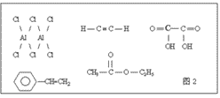
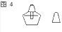
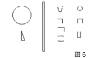
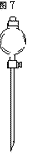
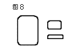
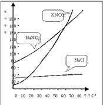
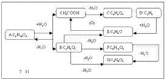
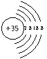
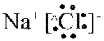
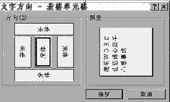

|
|
| 当前位置：电脑报电子版 > 1999 年 > 25 期 > OA专刊 > 标准化试卷的制作 |
| 《 标准化试卷的制作 》 |
| Word97具有强大的文本和图形编辑功能。在学校教学中可以用它来制作标准化考试试卷 。在大多数学校还未配备自动题库和扫描仪的情况下，用Word97自己制作试卷 ，远比使用其它编辑软件方便快捷得多，特别是在书写化学方程式时，对付众多的上下标和等号上下的反应条件，可谓得心应手、进退自如。在书写有机物的结构式和画实验仪器装置图以及其它图形方面，Word97的绘图工具提供了众多的功能，只要你能巧妙地加以运用，再别扭的结构式和各种装置图也难不倒你。制作出的试卷美观程度足以和正规印刷厂的产品媲美 。下面以制作中学化学标准化试卷为例介绍试卷的制作过程。
一、化学方程式的输入 例如输入如下反应方程式：(绘图工具所画) 1. 在编辑文本时直接输入 此法的要点是等号和反应条件的输入，以及上下标的处理。等号和反应条件有两种处理方法，（1）定义符号快捷键后与方程式一齐直接输入，（2）用绘图工具输入。先说第一种，先定义符号快捷键，点击菜单栏中的“插入”→“符号”， 在出现的符号对话框的“字体”一栏选“宋体”，在符号中选“ = ”（选中后此符号会变蓝 、变大），接着点击右下角“快捷键(K)”选框，又出现复选对话框，在“请按新快捷键”框中键入“Alt ＋ 2 ”，再点击“指定”后，点击“关闭”返回符号对话框（请注意，以后此操作过程我们称之为“定义符号快捷键”）。这样，画“等号”时，按住“Alt”键，连续按“2”，就可画出任意长短的等号。以同样的方法，选“ Symbol ”字体，将 “ Alt ” ＋ 数字小键盘上的 “8”、“2”、“5”分别定义为“ ↑”、“↓ ”、“△”三个符号的快捷键。先插入一个图文框，在图文框中第一行适当位置输入MnO2，回车，在下一行输入2KClO3，连按“Alt＋2 ”输入等号 ，为使整个等号不出现断点，还要压缩一下它们的间距，方法是：选中等号，单击右键，在出现的对话框中选“字体”→“字符间距”→“间距”→“紧缩”，“磅值”取 1.5（以后的这类操作统称“压缩字间距”）。接着输入2KCl ＋ 3O2 ↑，回车，在等号下方输入 “△”，然后选中整个方程式并单击鼠标右键，在弹出的菜单中点击“段落”，点击“缩进和间距”复选框，在“行距”选项中选“最小值”，将该值设置为0，这样，化学方程式就紧凑多了（以后此操作过程我们称之为“调整行间距”）。最后双击图文框边，出现“设置图文框格式”对话框，点击“颜色和线条”选项，将线条颜色设置为无（同样，此操作过程，以后就用“设置颜色”四个字代替），这样图文框就不会打印出来了（此法的优点是省事快捷，缺点是等号和“反应条件”的间距还是大了一点，而等号的上下两条线的间距又窄了点，美观程度稍差）。（2）法与（1）法不同之处就是在等号和“反应条件”上作了点改进，方法是：在等号的位置上用绘图工具画出两条平行线（用鼠标调整这两条线的宽度和位置时，同时按住“Alt” 键，这样就能随心所欲 ，指哪放哪）。在等号上方输入MnO2 ,将光标移到等号的下方，接着输入加热（△）符号：在绘图工具栏中的“自选图形”→“基本形状”中选三角形（请注意，以下类似的选形作图操作，我们称为“选取图形”)。调整满意后，右击图文框边，在弹出的菜单中选“设置图文框格式”，在“格式”复选框中选取方程式图文框与文本的环绕方式，不选“随文字移动”和“锁定位置”，这样，图文框中的所有内容在重新排版时才会整体移动 。此法的优点是，书写的方程式较为美观，适于写反应条件多且为文字型的化学方程式。缺点是速度较前一种慢。你可根据不同的方程式选用不同的方法。“且慢！”你一定要说，“方程式的上下标还没有处理呢！”，别急，处理上下标最快捷的方法是整份试题输完后一次性设置，方法是：先找到第一个有上标的化学式，选中第一个上标，按快捷键 “Ctrl”＋ “Shift” ＋“ ＋ ”，设好后，用鼠标双击工具栏中“格式刷”，然后依次将全文的上标点选一遍，上标就全部设好。按上述方法（下标快捷键是“Ctrl” ＋ “=” ），将下标也全部搞定。 2 .用Microsft Equaion 3.0输入 详见本报第6期34版“Word97中编辑公式和方程式的好工具Equation3.0”一文。 二、结构式的输入 1．画带苯环的结构式先画苯环，“选取图形”六边形，同时按 "Shift” 键，得到正六边形。再画一个适当大小的圆，用鼠标拖动到正六边形中，再点击“绘图”工具条上的“选择对象”（左斜向上的空心箭头），拖动鼠标画出一个虚框将正六边形选中或按住“Shift” 键，点击这两个图形（请注意，以后的类似操作，都称“选择对象”）。点击“绘图”→“对齐或分布”→“水平居中”和“垂直居中”，圆就放在正六边形的正中了(请注意，下面还要用到这一技术，我们用“居中对齐”四个字代替此操作过程）。若要画另一种形式的苯环，可在正六边形的三条边内间隔加上三条短线，方法是：将图形放大200％ 或500％，点取“自选图形”中的“直线”，按住 “Alt" 键 。用鼠标细致调整短线的长度和位置，若角度不好调整，可点击绘图工具栏上的“自由旋转”，先调整好角度，再调整长短和位置，调整满意后复原到100％。最后，要将苯环进行“组合”，操作方法是：用“选择对象”选中苯环，点击“绘图”→“组合”，经过这样一折腾，苯环就“活了”，可以用鼠标拖动它移动到文本的各个地点，任意放大、缩小，拉长、压扁 ，点击“绘图”→“旋转或翻转”，还可将其旋转任意角度 ，很方便地连接其它取代基（ 图 1 ）。“选择”＋“组合”这一招，下面也要多次当“灵丹妙药”使用，我们简称“组合”。 2. 画其它有机物的结构式 先定义几个临时快捷键 ，用本文前面叙述过的“定义符号快捷键”方法，选字体为“宋体” ，指定“Alt ＋1 ”、 “Alt ＋ 2 ”、 “Alt ＋ 3 ”、“Alt ＋ 4 ” 、“ Alt ＋ 5 ” 和“Alt ＋ 6 ” 分别为 “|” 、“ = ”、“ \ ” 、“／” 、“≡” 和“－”的快捷键。以后结构式中的单键（包括垂直、水平和有一定角度三种）、双键（垂直、水平两种，画垂直双键时，连击“Alt ＋ 1 ”两次）、三键（画垂直三键可连击 “ Alt ＋ 1”三次）都可以直接用键盘输入，录入速度大大加快。接下来先插入一个“图文框”，调整好大小，即可开始录入。我们画如下结构式：气态氯化铝、乙炔、乙二酸、苯乙烯和乙酸乙酯。如果您觉得“双键“或”三键”太短，可连击两次相应的快捷键，然后选中它们，“压缩字间距”，用两个合为一个（图2乙酸乙酯中的双键就是用此法画的）。录完以后，接着将“图文框”的颜色设为白色。全文录完后,可用同样方法将定义的快捷键删除。 三、画仪器装置图 我们以画酒精灯、分液漏斗、集气瓶为例。画图分两个步骤：1.选制部件；2. 拼装调。我们先画酒精灯。先“选取图形”，选取如下五个图形（图 3 ）。将图中的两个梯形旋转180°，再双击矩形图，出现“设置自选图形格式”对话框，点击 “大小” 调整矩形的高度和宽度（用此方法能将图形调小、调精细），用它做酒精灯的灯芯管。其它图形也可用相同方法精细调整，最后把这五个图拼装起来就是不错的酒精灯和灯帽（图 4）。拼装前一定记住将坐标线调出，用它作参照，拼装才能又快又准。方法是：先点击“视图”菜单，选“坐标线”，然后点击“绘图（R）”中的“调整坐标线”，在出现的对话框中将“水平间距”和“垂直间距”均设为6磅，“显示”都调整为1（以后的这类操作，都简称“调出坐标线”和“调整坐标线”）。拼装好后，进行“组合”。拼装过程中，要注意各个部件的叠放次序。用鼠标右键单击每个部件的边框，都会出现菜单，点击“叠放次序”，就可在弹出的复选框中选取合适的次序。经“组合”过的这一对图形就可以拖放到文件中的任意地点，并能任意放大、缩小，改变高度和宽度。你不相信？那你就试试将灯帽戴到酒精灯上去，看看画得合不合适。你如果觉得此酒精灯还不够漂亮，可将其送进“美容院”去打扮一番，将鼠标箭头放在图形上点击右键，选“复制”，将图形拷贝入剪贴板，再调出Win9X的“画图”，将剪贴板上的图形粘贴进去，用“橡皮”和“画笔”修整后，用“剪裁 ”工具将图形剪下，再粘贴回来，哈哈！那可就旧貌换新颜，今非昔比啦（图 5）。分液漏斗的画法是：先用“自选图形”制出下列十种部件图（图 6 ）， 精细调整大小，拼装后见图7。集气瓶部件为图8，拼装后为图9。其它仪器如何制作，你自已尽情发挥去吧！只是要记住画完后将它们全部保存在一个文件中，以后使用时，将文件打开放到桌面上，用鼠标拖到你编辑的文档中任意组合，真可谓一劳永逸。 四、曲线图和流程图的输入 中学化学中，有大量的曲线图，如：溶解度曲线、化学平衡曲线等。试题中的物质转换流程图也不少。Word97画这些曲线图、流程图非常方便，关键是掌握一定的技巧。下面我们就开始进行溶解度曲线图和流程图的制作。先画溶解度曲线图，首先“调出坐标线”，将水平和垂直间距都设为1。插入一个“图文框”，“选取图形”，“箭头”，按住 “Shift”键拖动鼠标画出曲线图的纵、横坐标线。点击“线型”,取值 1.5磅。接下来先画纵坐标上的刻度线段，点击“矩形框”图形，在“图文框”中任意处画一个小矩形，双击它，进入“设置自选图形格式”菜单，先调整“颜色和线条”，取“线型”值1 磅 ，点“大小”，“高度”取 0 、“宽度”取0.1 ( 你可能会问，画短刻度线，为何要画矩形？这可是画短线的秘诀。若用“直线”来画短线，因线段太短，画和调整的时候，它总要倾斜，很难调整成水平或垂直状态，而用“高度”或“宽度”设置为零的矩形来画短线，则很容易控制)。画短线时，将页面放大到 200％ ，点击“零高矩形”当它四周出现四个控制点且光标箭头变为一个十字双箭头时按住“Ctrl”键，将其拖到第一个刻度点，到位后放开即画好了，继续这样操作直至画好全部纵坐标刻度线。如法炮制一个“零宽矩形”，画好全部横坐标刻度线。填上纵坐标箭头和横坐标箭头代表的意义：“溶解度（克）”和“温度（℃），分别标上数值。然后，点击“曲线”画出各种物质的溶解度曲线，线型取1.5 磅（注意：每条曲线的取点应尽量多些，每划到一个点时，都要点击一下鼠标左键，画出的曲线才准确、平滑）。最后，为各条曲线画上“标注”，方法同“选取图形”，画好后将页面还原为 100％。接下来该画流程图了。还是先插入一个“图文框”，“选取图形”，画“矩形”和“圆角矩形”各一个。然后各复制若干，拖动到合适的位置处（圆角矩形作为物质框，矩形作为箭头上方的条件框，画上连接的线段和箭头。先点击“圆角矩形“，四周出现控制点，光标箭头变为十字双箭头时，用鼠标右键单击之，出现对话框，选“添加文字”，光标即出现在园角矩形框内，输入文字。再用相同方法在“矩形”中输入文字（本例是“ ＋ ”或 “－”H2O），再右键单击任意一个矩形框，将矩形框颜色设为白色，点击确定返回，这个矩形框边就隐藏起来了。接着双击工具单中的“格式刷”，它变为一把小刷子，依次点选所有的“矩形框”，就把它们全部隐藏了（图 11）。 五、画其它图形 1．画原子结构示意简图“选取图形”，画五个直径依次为1.4 、2、 2.6、 3.2、 3.8的圆（单位：厘米，线型：0.75磅），在第一个圆中输入＋35作为原子核，叠放顺序从大到小，最大圆放在最底层，在“箭头总汇”中选压缩其宽度，放大到刚好盖住所有圆的2／3 ，放在“原子核”的下一层。再把它们“居中对齐”。使五个圆同心。最后插入一个“图文框”盖在圆露出的部分上，依次输入2、8、18、8，将“箭头”和“文本框”的颜色设为白色，图就画好了。美中不足的是，原子核太大，比例有点失调。此图作好后，将其“组合”，然后插入一个“图文框” 选“横排”，这时“图文框”出现而图形消失，双击“图文框”，进入图形编辑窗口，同时弹出“编辑图片”工具栏，先选“重设图片边界”，再选“关闭图片”此时图形连同图文框返回文档（图 12)。此图就放在文档中任君放大、缩小，随意拖动了（以上操作，我们以后用“插入图文框”简称之）。你若一定要比例对称，那就在画结构图时先不画“原子核”，待其它都画完并“组合”成“无核原子”之后，“插入图文框”，在“图片编辑窗口”中点击“插入”菜单→“对象”→“新建”→“画笔图片”→“确定”，插入Win9X 的“画图”，在“画图”的画框内画一个直径约4 ～ 5毫米的圆，填入＋35（宋体，10 ～ 12磅），做一个“进口”的“原子核”，选定它后“剪切”， 关闭“画图”返回到“图形编辑窗口”，“粘贴”此“进口原子核”，拖到“无核原子”上“组合”。最后，点击“重设图片边界”和“关闭图片”返回。大功告成矣! 2．画电子式 画电子式的关键在于画电子，先画一个圆，将其直径设为0.1cm, 线型2.25磅，用它代表电子，复制若干，再画一个小三角形，高和宽分别设为0.2cm ,它也可以代表电子。以画 NaCl 的电子式为例，“NaCl ”选一号字，拖填“电子”时，同时按住 “Alt ”键，“电子才能准确到位。画好后“组合”，再“插入图文框”，这个“电子式”就可以让你任意“移动 ”了(图13)。 六、试卷蜡纸的制作 试卷录入完毕，如何排版制成标准化的考卷并能用蜡纸打印出来呢？这也需要一定的技巧。我们分以下两个问题来介绍。1．试卷左侧密封线和其中内容的录入 标准试卷左侧都有一密封线，里面一般要印上如下内容中的一部分：“地区”、“学校”、“班级”、“姓名”、“准考证号”、“学号”、“学科”、“科类”等等。还要印上“密封线内不要答题”之类的话语。将这部分内容加入的方法是：将光标移到文首，插入一个“图文框”，此框要从首页页面的最顶端拖到最底端，宽度为2.2 cm ,然后填入相应的内容。先将光标拖入“图文框”内，移到最下端，点击右键，出现“对话框”，再点击“文字方向”，选中间那一种(见图14)。输入相应的文字，画好所有“直线”后“组合”。这样，框内的所有内容才能一齐移动。以后各页插入的“图文框”大小不变，只填入“密封线内不要答题”一行字（复制最快）。“密封线框”的样式见下图（在试题内是竖放）。 若试卷纸要双面印刷，“密封线框”的位置奇偶页所放位置不同，奇数页放左边，偶数页放右边。版面设置不变。录完后将“图文框”颜色设为白色。 2．排版成打印普通蜡纸的版面 要将试题打印在八开蜡纸上,必须按如下所述设置排版,在“文件”菜单中选“页面设置”，上、下边距采用默认设置，左、右边距设为3.8，页眉不动，页脚设为 2。纸张大小：“自定义”，方向：“横向”，高度: 27，宽度: 38 (单位：厘米)，“确定”后退出。再在“格式”菜单中选“分栏”， 选“分两栏”，选 “栏宽相等”。具体分栏大小见下表： 点击"确定”后，WORD97 就按此设置排版整份试卷，因为试题中有众多的“文本框”和“图文框”，所以还必须逐页进行调整。最后，加入页码，方法是“在“视图”菜单中，点击“页眉和页脚”，出现“页眉／页脚"工具条,切换到页脚，将光标移到要添加页脚的位置，选“插入自动图文集”中的“第X页共Y页”。由于在A4纸横放打印时,Word97没有左右两边分别设置页码的功能,我们可按以下五步进行设置：（1）先将“第X页中的“1”删去，点击“插入”菜单中“数字”，在数字栏（N）中输入 2，选择“数字类型”“1，2，3，... ” (后同)， 按“确定”后,出现“2”，选中它并按“Shift ＋ F9”，“2”变为域代码“{=2\＊Arabic} ”。（2）在“Arabic”与“}”之间插入“＊”号(“＊”号应紧靠“}"，否则会出错)。再点击“插入”菜单中的“域（E）”，出现对话框，在“类别”中选“编号”，在“域名”中选“Page”，“确定”后，出现一个“1”，选中它并按“Shift ＋ F9”，“1”变为域代码“{PAGE\MERGEFORMAT}}“。（3）在两个”}}"之间插入减号“－ ”，接着点击“插入”菜单中“数字”，在“数字栏（N）”中输入1，“数字类型”同前,点击“确定”。（4）将“共Y页”中的Y值扩大一倍（如：“共6页”，删去6，用键盘直接键入12），左边页码就定义好了。（5）将光标移到要输入右边页脚的位置，插入“第X页共Y页”，重复执行上述第（1）、（2）、（4）步即可定义好右边的页码。“预览”满意后，就可打印到蜡纸上了。 最好的办法是：先进行页面设置，插入好“密封线框”后，在“文件”菜单中选“另存为”，在出现的复选框中点击“保存类型”，选“文档模板”，取名“化学试卷”，将其存为“模板”，以后制作化学试卷时直接调用此模板输入试题。排版中的问题就少多了。 (云南化建学校 许以谦） |
| 下载本期推荐软件 | 页 首 |
| 《电脑报》版权所有，电脑报网站编辑部设计制作发布 |